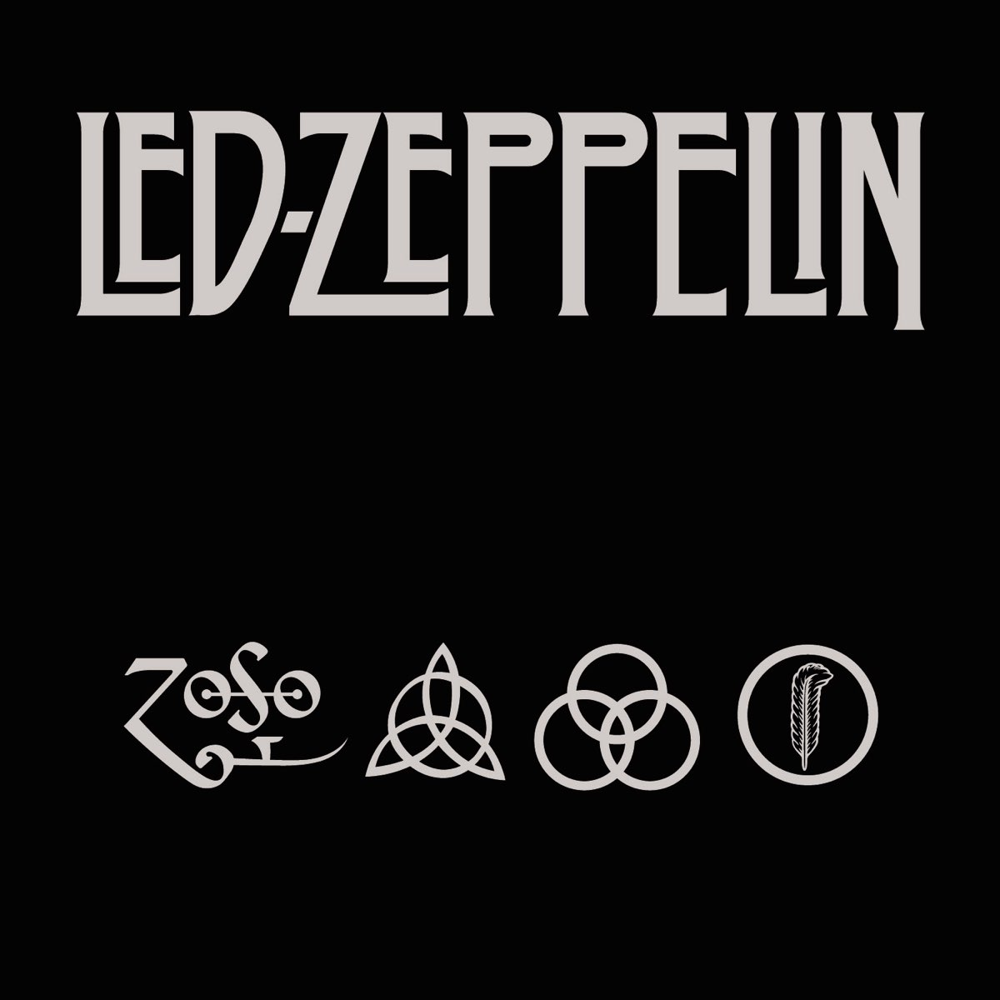

La historia de Led Zeppelin comienza en 1968, cuando el guitarrista Jimmy Page, exintegrante de The Yardbirds, decide formar una nueva banda tras la disolución de ese grupo. Para ello convoca al cantante Robert Plant, quien a su vez recomienda al baterista John Bonham. Finalmente, se suma John Paul Jones, músico de sesión con gran experiencia. Inicialmente se presentaron como “The New Yardbirds”, pero poco después adoptaron el nombre Led Zeppelin.
Ese mismo año lanzan su álbum debut, Led Zeppelin, que marca un quiebre en el rock por su mezcla de blues eléctrico y sonido pesado. En 1969 publican también Led Zeppelin II, consolidando su estilo con riffs potentes y una energía cruda que influiría directamente en el hard rock y el heavy metal.
A lo largo de los años 70, la banda alcanza un éxito mundial sin precedentes. Discos como Led Zeppelin III muestran un costado más acústico y folk, mientras que Led Zeppelin IV los lleva a la cima con temas como Stairway to Heaven. Posteriormente, continúan innovando con álbumes como Houses of the Holy y Physical Graffiti, explorando distintos géneros y expandiendo su sonido.
Más allá de la música, la banda también se caracterizó por su mística, excesos y una fuerte presencia en vivo, convirtiéndose en uno de los actos más convocantes de su época. Sin embargo, hacia fines de la década, los problemas personales comienzan a afectar al grupo, incluyendo la muerte del hijo de Robert Plant en 1977 y el creciente desgaste por las giras.
El punto final llega en 1980, tras la muerte de John Bonham. Ante esta pérdida, los miembros restantes deciden disolver la banda, afirmando que no podían continuar sin él.
Con el tiempo, Led Zeppelin se consolida como una de las bandas más importantes de la historia del rock, influyendo en innumerables artistas y dejando un legado que sigue vigente hasta hoy.
